Telefoon hoort elk fout woord
Beschrijf het woord, maar zeg de verboden woorden niet: je telefoon luistert mee en zoemt vanzelf. Raadt je team het, dan telt de kaart. Geen scheidsrechter nodig.
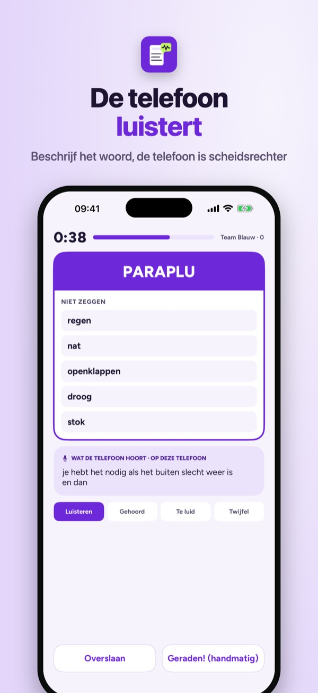
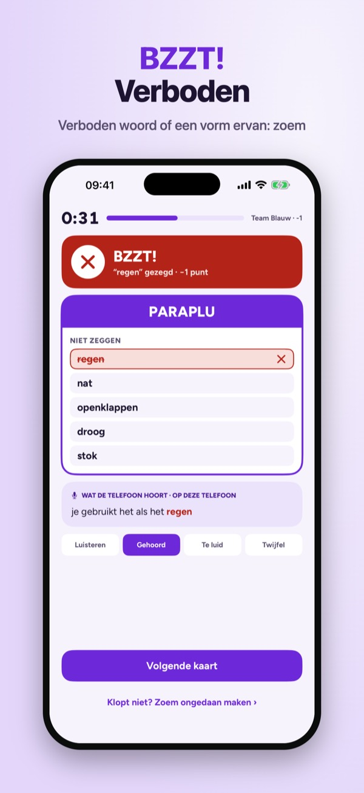
Zoemwoord is het woorden-raadspel waarbij je telefoon de scheidsrechter is. Wie beschrijft, houdt de telefoon vast en praat. Zegt hij een verboden woord, of een vorm ervan, dan zoemt Zoemwoord meteen. Roept iemand uit je team het goede woord, dan telt de kaart vanzelf.
De stapel Basis met 150 kaarten, twee teams en automatisch zoemen werken zonder aankoop. Zoemwoord Plus is een eenmalige aankoop: alle stapels, eigen kaarten maken en delen, tot zes teams en de historie van je spelavonden. Geen abonnement, geen reclame.
Zoemwoord luistert alleen tijdens een ronde en herkent woorden op je telefoon. Er wordt geen geluid of tekst opgeslagen of verstuurd. Herkenning kan zich vergissen; elke zoem kun je terugdraaien. Zonder microfoon speel je met de zoemknop.
Terms of Use (EULA): https://www.apple.com/legal/internet-services/itunes/dev/stdeula/
Privacy: https://apps.baytech.nl/zoemwoord-nl/
Popisuj slova, tým hádá
Popiš slovo, ale neříkej zakázaná slova. Soupeři hlídají a mačkají bzučák, časovač a skóre počítá telefon. Vlastní české karty.
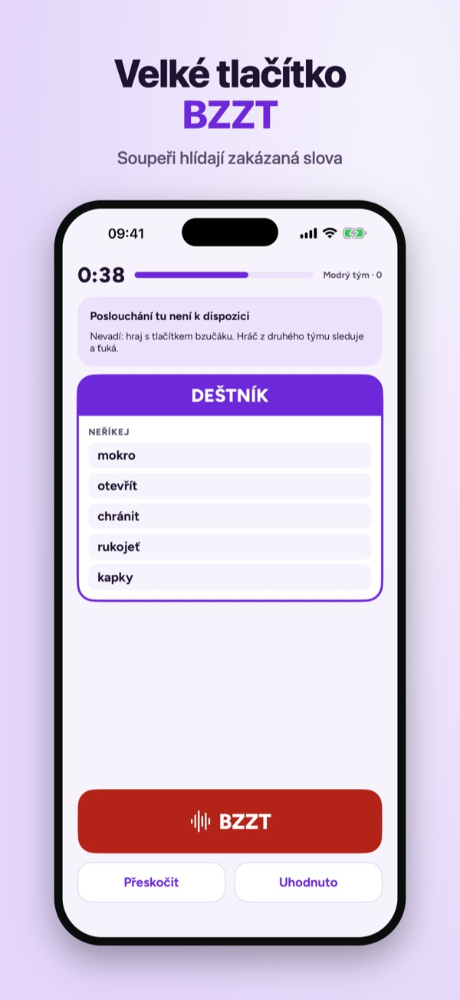
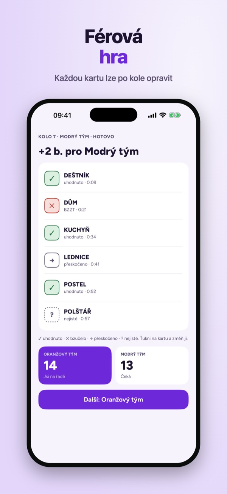
Zoemwoord je hra na hádání slov pro partu a rodinu. Kdo popisuje, drží telefon a vysvětluje slovo z karty, aniž by řekl pět zakázaných slov. Soupeři hlídají a při chybě zmáčknou velké tlačítko BZZT. Telefon hlídá čas, počítá body a pamatuje si, kdo vede.
Čeština zatím nemá rozpoznávání řeči v zařízení, a proto se česky hraje s tlačítkem bzučáku. Zvuk se nikdy neodesílá na server.
Balíček Základ se 150 kartami, dva týmy a hra bez nákupu. Zoemwoord Plus je jednorázový nákup: všechny balíčky, vlastní karty a sdílení, až šest týmů a historie večerů. Bez předplatného, bez reklam.
Terms of Use (EULA): https://www.apple.com/legal/internet-services/itunes/dev/stdeula/
Privacy: https://apps.baytech.nl/zoemwoord-nl/
Mobilen hör förbjudna ord
Beskriv ordet men säg inte de förbjudna orden: mobilen lyssnar och surrar av sig själv. Gissar laget rätt räknas kortet. Ingen domare behövs.
Zoemwoord är gissa-ord-leken där mobilen är domare. Den som beskriver håller mobilen och pratar. Säger hen ett förbjudet ord, eller en form av det, surrar Zoemwoord direkt. Ropar någon i laget rätt ord räknas kortet automatiskt.
Leken Bas med 150 kort, två lag och automatiskt surr fungerar utan köp. Zoemwoord Plus är ett engångsköp: alla lekar, egna kort och delning, upp till sex lag och historik. Ingen prenumeration, ingen reklam.
Zoemwoord lyssnar bara under en runda och känner igen ord i mobilen. Inget ljud eller text sparas eller skickas. Igenkänningen kan ta fel; varje surr går att ångra. Utan mikrofon spelar ni med surrknappen.
Terms of Use (EULA): https://www.apple.com/legal/internet-services/itunes/dev/stdeula/
Privacy: https://apps.baytech.nl/zoemwoord-nl/
Mobilen hører forbudte ord
Beskriv ordet, men ikke si de forbudte ordene: mobilen lytter og summer av seg selv. Gjetter laget riktig, teller kortet. Ingen dommer trengs.
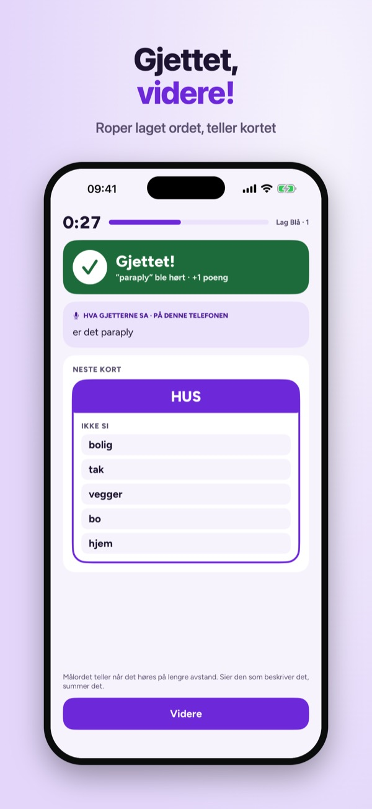
Zoemwoord er gjette-ord-leken der mobilen er dommer. Den som beskriver, holder mobilen og snakker. Sier hen et forbudt ord, eller en form av det, summer Zoemwoord med en gang. Roper noen på laget riktig ord, teller kortet automatisk.
Kortstokken Basis med 150 kort, to lag og automatisk summing virker uten kjøp. Zoemwoord Plus er et engangskjøp: alle kortstokker, egne kort og deling, opptil seks lag og historikk. Ingen abonnement, ingen reklame.
Zoemwoord lytter bare under en runde og gjenkjenner ord på mobilen. Ingen lyd eller tekst lagres eller sendes. Gjenkjenningen kan ta feil; hver summing kan angres. Uten mikrofon spiller dere med summeknappen.
Terms of Use (EULA): https://www.apple.com/legal/internet-services/itunes/dev/stdeula/
Privacy: https://apps.baytech.nl/zoemwoord-nl/
Mobilen hører forbudte ord
Beskriv ordet, men sig ikke de forbudte ord: mobilen lytter og summer af sig selv. Gætter holdet rigtigt, tæller kortet. Ingen dommer nødvendig.
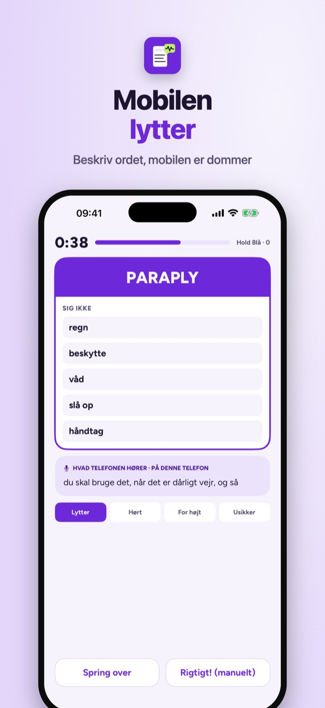
Zoemwoord er gætte-ord-legen, hvor mobilen er dommer. Den, der beskriver, holder mobilen og taler. Siger hen et forbudt ord, eller en form af det, summer Zoemwoord med det samme. Råber nogen på holdet det rigtige ord, tæller kortet automatisk.
Bunken Basis med 150 kort, to hold og automatisk summen virker uden køb. Zoemwoord Plus er et engangskøb: alle bunker, egne kort og deling, op til seks hold og historik. Intet abonnement, ingen reklamer.
Zoemwoord lytter kun under en runde og genkender ord på mobilen. Ingen lyd eller tekst gemmes eller sendes. Genkendelsen kan tage fejl; hver summen kan fortrydes. Uden mikrofon spiller I med summeknappen.
Terms of Use (EULA): https://www.apple.com/legal/internet-services/itunes/dev/stdeula/
Privacy: https://apps.baytech.nl/zoemwoord-nl/
O telemóvel ouve a palavra
Descreve a palavra sem dizer as proibidas: o telemóvel ouve e apita sozinho. Se a equipa acertar, a carta conta. Não é preciso árbitro.
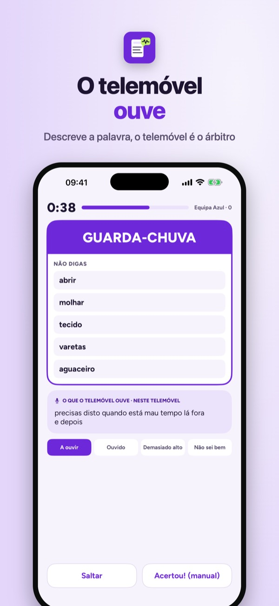
Zoemwoord é o jogo de adivinhar palavras em que o telemóvel é o árbitro. Quem descreve segura o telemóvel e fala. Se disser uma palavra proibida, ou uma forma dela, o Zoemwoord apita logo. Se alguém da equipa gritar a palavra certa, a carta conta sozinha.
O baralho Base com 150 cartas, duas equipas e o apito automático funcionam sem compra. O Zoemwoord Plus é uma compra única: todos os baralhos, cartas próprias e partilha, até seis equipas e histórico. Sem subscrição, sem anúncios.
O Zoemwoord só ouve durante uma ronda e reconhece palavras no telemóvel. Nenhum som ou texto é guardado ou enviado. O reconhecimento pode enganar-se; cada apito pode ser desfeito. Sem microfone, joga com o botão de apito.
Terms of Use (EULA): https://www.apple.com/legal/internet-services/itunes/dev/stdeula/
Privacy: https://apps.baytech.nl/zoemwoord-nl/
Le téléphone entend les mots
Fais deviner le mot sans dire les mots interdits : le téléphone écoute et buzze tout seul. Ton équipe trouve, la carte compte. Plus besoin d’arbitre.
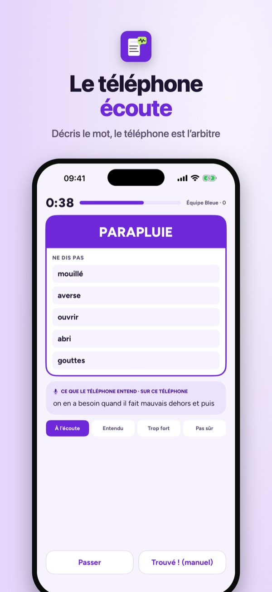
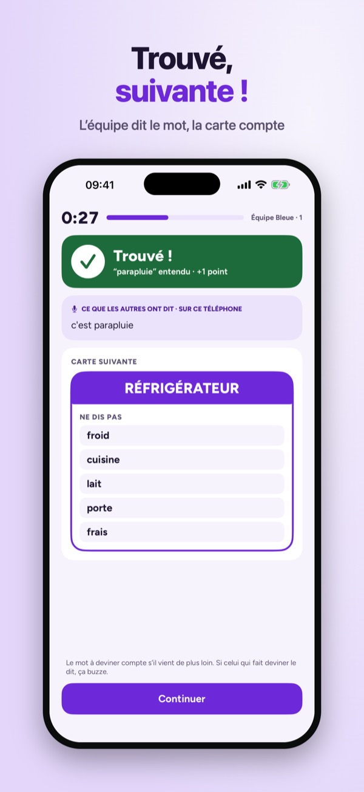
Zoemwoord est le jeu de mots à faire deviner où le téléphone est l’arbitre. Celui qui décrit tient le téléphone et parle. S’il dit un mot interdit, ou une de ses formes, Zoemwoord buzze aussitôt. Si quelqu’un de l’équipe crie le bon mot, la carte compte toute seule.
Le paquet Base de 150 cartes, deux équipes et le buzz automatique s’utilisent sans achat. Zoemwoord Plus est un achat unique : tous les paquets, cartes perso et partage, jusqu’à six équipes et historique. Sans abonnement, sans pub.
Zoemwoord n’écoute que pendant une manche et reconnaît les mots sur le téléphone. Aucun son ni texte n’est conservé ou envoyé. La reconnaissance peut se tromper ; chaque buzz peut être annulé. Sans micro, jouez avec le bouton buzzer.
Terms of Use (EULA): https://www.apple.com/legal/internet-services/itunes/dev/stdeula/
Privacy: https://apps.baytech.nl/zoemwoord-nl/
El móvil oye la palabra
Describe la palabra sin decir las prohibidas: el móvil escucha y zumba solo. Si tu equipo acierta, la carta cuenta. No hace falta árbitro.
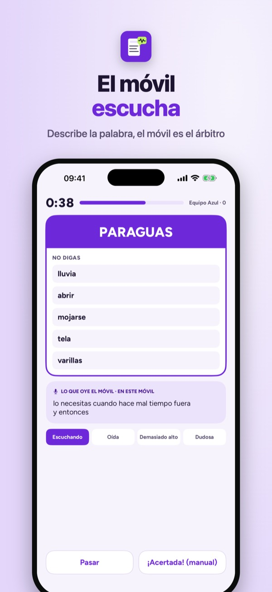
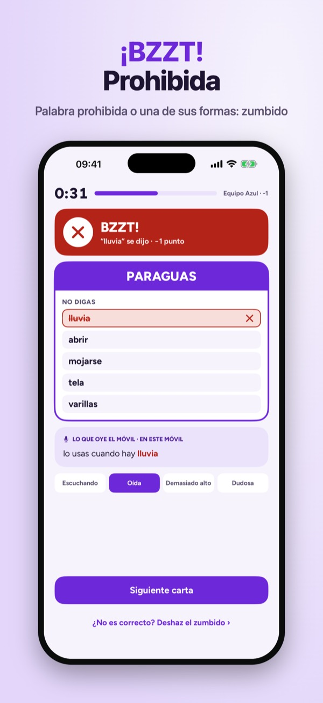
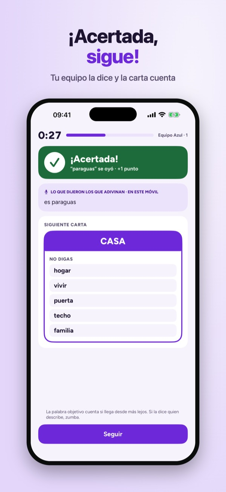
Zoemwoord es el juego de adivinar palabras en el que el móvil hace de árbitro. Quien describe sujeta el móvil y habla. Si dice una palabra prohibida, o una forma de ella, Zoemwoord zumba al instante. Si alguien del equipo grita la palabra correcta, la carta cuenta sola.
La baraja Base con 150 cartas, dos equipos y el zumbido automático funcionan sin compra. Zoemwoord Plus es una compra única: todas las barajas, cartas propias y compartir, hasta seis equipos e historial. Sin suscripción, sin anuncios.
Zoemwoord solo escucha durante una ronda y reconoce las palabras en el móvil. No se guarda ni se envía sonido ni texto. El reconocimiento puede fallar; cada zumbido se puede deshacer. Sin micrófono, jugáis con el botón zumbador.
Terms of Use (EULA): https://www.apple.com/legal/internet-services/itunes/dev/stdeula/
Privacy: https://apps.baytech.nl/zoemwoord-nl/
Opisuj słowa, drużyna zgaduje
Opisz słowo, ale nie mów zakazanych. Rywale pilnują i wciskają brzęczyk, a telefon liczy czas i punkty. Własne polskie karty.
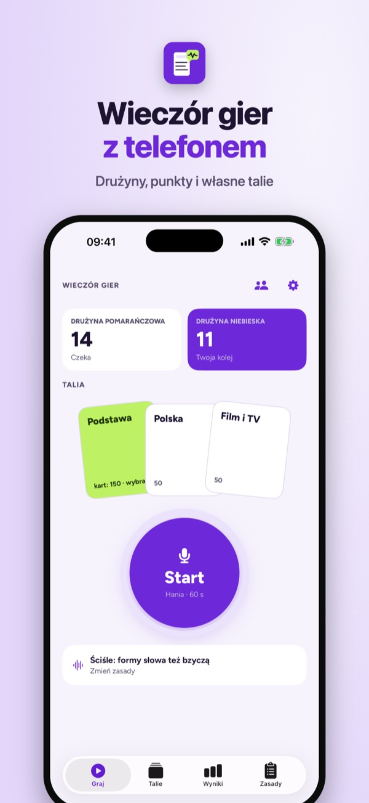
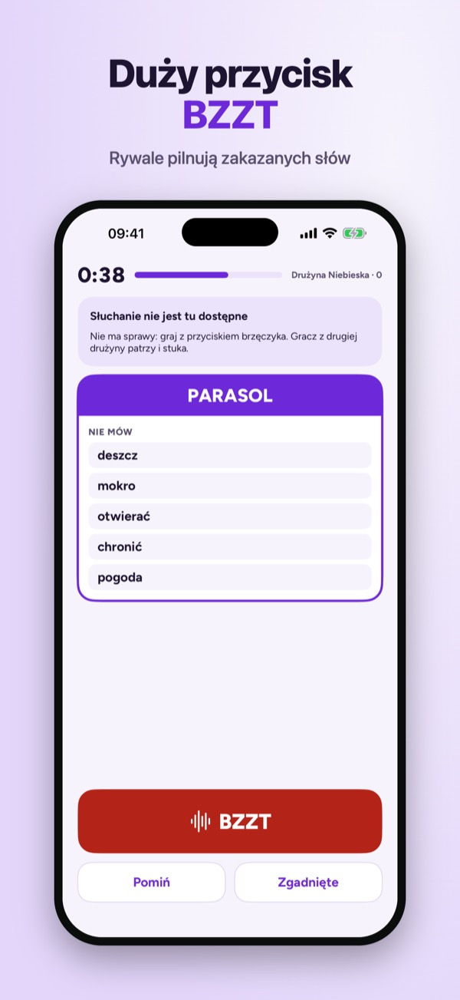
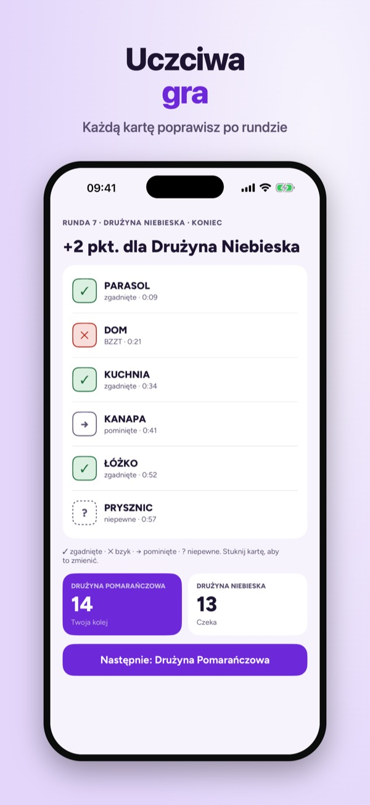
Zoemwoord to gra w zgadywanie słów dla znajomych i rodziny. Kto opisuje, trzyma telefon i objaśnia słowo z karty, nie mówiąc pięciu zakazanych słów. Rywale pilnują i przy błędzie wciskają duży przycisk BZZT. Telefon pilnuje czasu, liczy punkty i pamięta, kto prowadzi.
Polski nie ma jeszcze rozpoznawania mowy na urządzeniu, dlatego po polsku gra się przyciskiem brzęczyka. Dźwięk nigdy nie trafia na serwer.
Talia Podstawa ze 150 kartami i dwie drużyny działają bez zakupu. Zoemwoord Plus to jednorazowy zakup: wszystkie talie, własne karty i udostępnianie, do sześciu drużyn i historia. Bez subskrypcji, bez reklam.
Terms of Use (EULA): https://www.apple.com/legal/internet-services/itunes/dev/stdeula/
Privacy: https://apps.baytech.nl/zoemwoord-nl/
Handy hört verbotene Wörter
Erkläre das Wort, ohne die verbotenen Wörter zu sagen: Das Handy hört mit und summt von selbst. Errät dein Team es, zählt die Karte. Kein Schiedsrichter nötig.
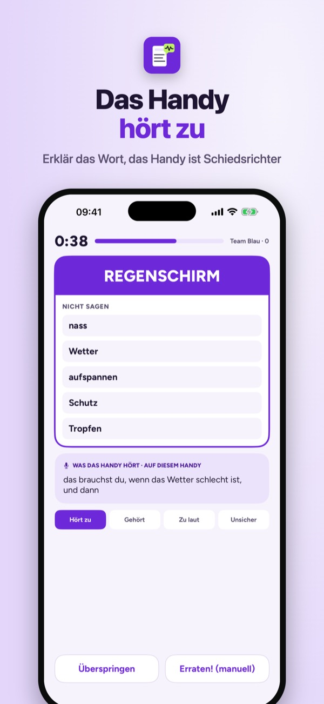
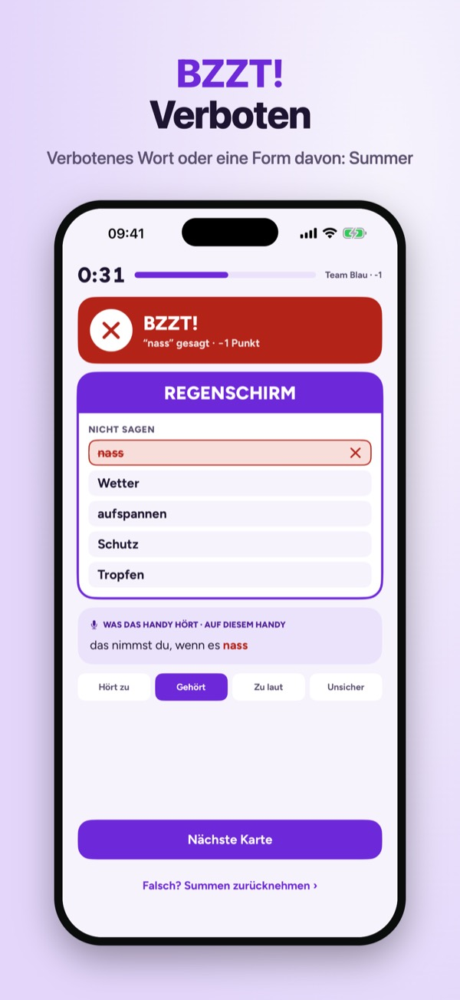
Zoemwoord ist das Wörter-Ratespiel, bei dem das Handy Schiedsrichter ist. Wer erklärt, hält das Handy und spricht. Fällt ein verbotenes Wort oder eine Form davon, summt Zoemwoord sofort. Ruft jemand aus dem Team das richtige Wort, zählt die Karte automatisch.
Der Stapel Basis mit 150 Karten, zwei Teams und automatisches Summen funktionieren ohne Kauf. Zoemwoord Plus ist ein Einmalkauf: alle Stapel, eigene Karten und Teilen, bis zu sechs Teams und Verlauf. Kein Abo, keine Werbung.
Zoemwoord hört nur während einer Runde zu und erkennt Wörter auf dem Handy. Es wird kein Ton und kein Text gespeichert oder gesendet. Die Erkennung kann sich irren; jedes Summen lässt sich zurücknehmen. Ohne Mikrofon spielt ihr mit dem Summer-Knopf.
Terms of Use (EULA): https://www.apple.com/legal/internet-services/itunes/dev/stdeula/
Privacy: https://apps.baytech.nl/zoemwoord-nl/
Your phone hears banned words
Describe the word without saying the banned ones: your phone listens and buzzes by itself. Your team guesses it, the card counts. No referee needed.
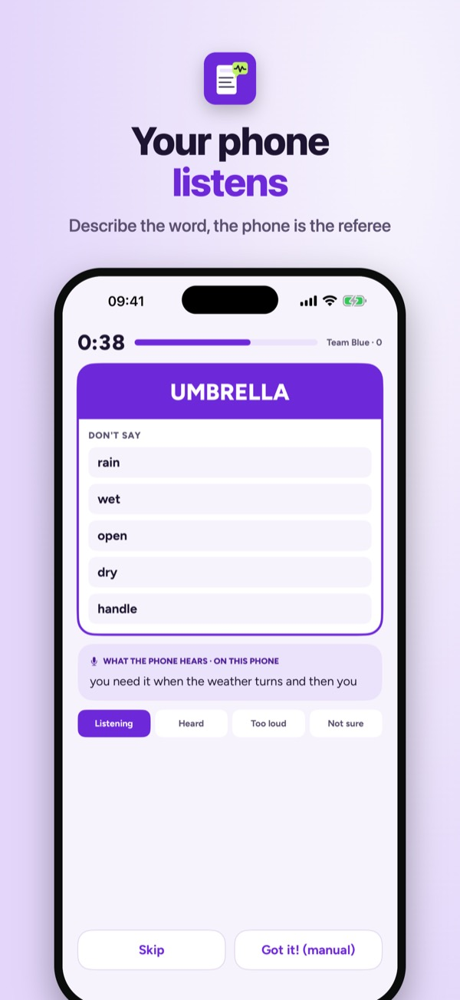
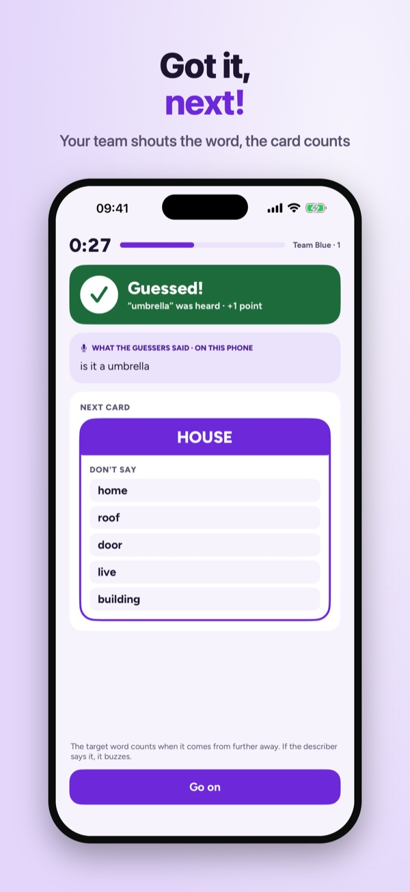
Zoemwoord is the word-guessing party game where your phone is the referee. Whoever describes holds the phone and talks. Say a banned word, or a form of it, and Zoemwoord buzzes at once. When someone on your team shouts the right word, the card counts by itself.
The Basic deck with 150 cards, two teams and automatic buzzing work without a purchase. Zoemwoord Plus is a one-time purchase: every deck, custom cards and sharing, up to six teams and game history. No subscription, no ads.
Zoemwoord only listens during a round and recognises words on your phone. No audio or text is stored or sent. Recognition can be wrong; every buzz can be undone. Without the microphone, play with the buzzer button.
Terms of Use (EULA): https://www.apple.com/legal/internet-services/itunes/dev/stdeula/
Privacy: https://apps.baytech.nl/zoemwoord-nl/